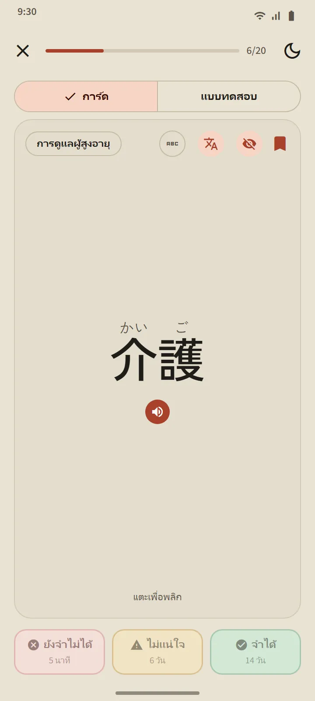
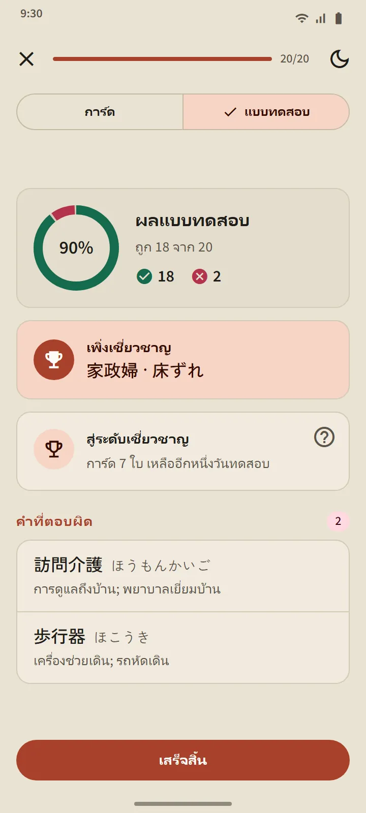
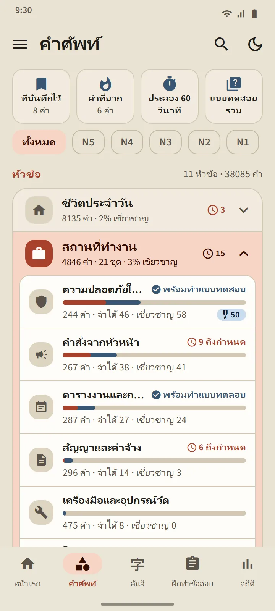
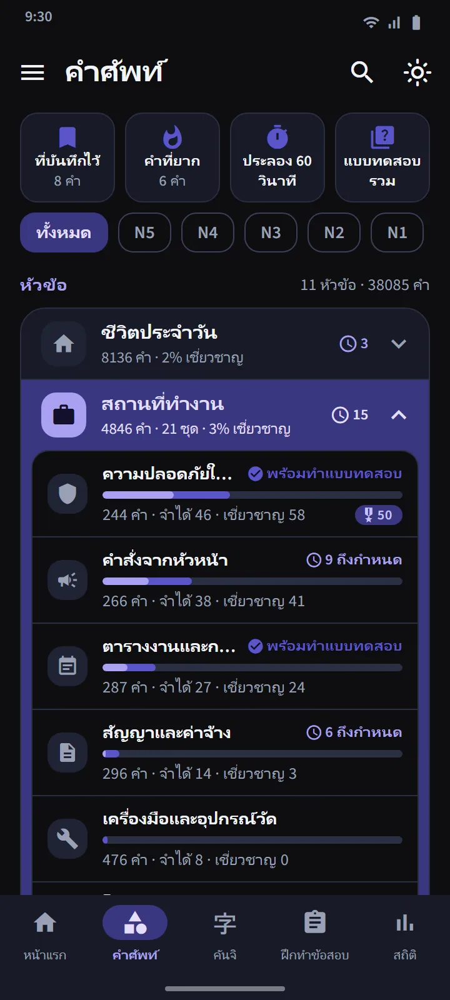

การ์ดที่รู้ว่าคุณกำลังจะลืม
ด้านหน้าของการ์ดแสดงคำศัพท์ (พร้อมฟุริงานะถ้าคุณต้องการ) แตะเพื่อพลิก: จะเห็นคำอ่าน โรมาจิ ความหมาย และคันจิส่วนประกอบ พร้อมปุ่มออกเสียง จากนั้นประเมินตัวเองด้วยปุ่มหนึ่งในสามปุ่ม
การจัดตารางทำโดย FSRS อัลกอริทึมทบทวนแบบเว้นระยะตัวเดียวกับที่แอปแฟลชการ์ดสมัยใหม่ใช้ แต่ละปุ่มแสดงว่าคำนั้นจะกลับมาเมื่อไร: อีกไม่กี่นาที ไม่กี่วัน หรือไม่กี่สัปดาห์ ยิ่งคุณตอบ “จำได้” บ่อย ช่วงห่างก็ยิ่งยาว
- ยังจำไม่ได้ ส่งคำกลับไปที่ขั้นกำลังเรียนจากทุกขั้น
- ไม่แน่ใจ ทำให้ช่วงห่างสั้นลง
- จำได้ ย้ายคำไปที่ขั้นจำได้แล้ว และเลื่อนการทบทวนครั้งต่อไปให้ไกลออกไป


สี่ขั้น และขั้นเชี่ยวชาญต้องพิสูจน์ได้
ทุกคำจะไต่ขึ้นสี่ขั้น: ใหม่ กำลังเรียน จำได้แล้ว เชี่ยวชาญ การกด “จำได้” บนการ์ดพาคำไปได้แค่ขั้นจำได้แล้ว หากจะถึงขั้นเชี่ยวชาญ คุณต้องตอบคำนั้นถูกในแบบทดสอบในสามวันที่ต่างกัน คำที่เชี่ยวชาญแล้วจะยังถูกทดสอบเมื่อถึงกำหนด และจะถอยลงหากตอบผิด
แบบทดสอบของชุดจะเปิดเมื่อมี 20 คำในชุดนั้นอยู่ในขั้นจำได้แล้วหรือเชี่ยวชาญ (ชุดที่เล็กกว่านั้นเปิดทันทีที่รู้ครบทุกคำ) คำถามมีทั้งสองทาง: จากคำเป็นความหมาย และจากความหมายเป็นคำ เมื่อจบ คุณจะเห็นคำที่เพิ่งเชี่ยวชาญ คำที่เหลืออีกก้าวเดียว และคำที่ตอบผิด


เรียนตามหัวข้อ ติดตามทุกคำ
แท็บคำศัพท์แบ่งเป็น 11 กลุ่ม และแต่ละกลุ่มมีชุดคำศัพท์ย่อย ๆ ตัวกรองด้านบนช่วยจำกัดทุกอย่างให้เหลือระดับ JLPT เดียว ทุกชุดมีหน้าจอของตัวเอง: วงแหวนแสดงร้อยละความคืบหน้า รายการคำพร้อมสถานะของแต่ละคำ ตัวกรอง “กำลังเรียน/จำได้แล้ว/เชี่ยวชาญ” และปุ่ม “เรียน” กับ “แบบทดสอบ”
กลุ่ม สถานที่ทำงาน มี 21 ชุดสำหรับผู้ที่จะไปทำงานที่ญี่ปุ่น: ความปลอดภัยในการทำงาน, คำสั่งจากหัวหน้า, ตารางงานและการลงเวลา, สัญญาและค่าจ้าง, เครื่องมือและอุปกรณ์วัด, โลจิสติกส์และคลังสินค้า, สำนักงานและเอกสาร, การแปรรูปอาหาร, การดูแลผู้สูงอายุ, โรงงานและการผลิต, เครื่องจักรอุตสาหกรรม, อิเล็กทรอนิกส์และไฟฟ้า, ก่อสร้าง, ร้านอาหารและครัว, เกษตรกรรม, อู่ต่อเรือ, ทำความสะอาดอาคาร, ประมง, ยานยนต์และซ่อมบำรุง, การบินและสนามบิน, ธุรกิจโรงแรม สำหรับชีวิตในญี่ปุ่น มีชุดเรื่องการเดินทาง การซื้อของและเงิน บ้านและเฟอร์นิเจอร์ รวมถึงกลุ่ม สังคมและธุรการ และ ร่างกายและสุขภาพ
| กลุ่ม | ชุดคำศัพท์ |
|---|---|
| ชีวิตประจำวัน | 16 |
| สถานที่ทำงาน | 21 |
| สังคมและธุรการ | 8 |
| ร่างกายและสุขภาพ | 8 |
| นิสัยและอารมณ์ | 8 |
| ชนิดของคำ | 5 |
| เทคโนโลยีและสื่อ | 4 |
| ธรรมชาติและวิทยาศาสตร์ | 10 |
| วิชาการและความเห็น | 8 |
| วัฒนธรรมและศาสนา | 4 |
| กีฬาและเกม | 3 |


ชุดพิเศษและการฝึกแบบเร็ว
เหนือรายการกลุ่มมีสามชุดที่ดึงคำจากทุกชุด: ที่บันทึกไว้ (คำที่คุณติดดาว) คำที่ยาก (เติมคำที่คุณลืมบ่อยบนการ์ดหรือตอบผิดในแบบทดสอบให้เอง) และ ประลอง 60 วินาที (การ์ดเท่าที่ทำได้ในหนึ่งนาที) ช่องที่สี่ แบบทดสอบรวม ทดสอบคำในขั้นจำได้แล้วและเชี่ยวชาญจากทุกชุดพร้อมกัน

พจนานุกรมพกพา 38,085 คำ
ไอคอนค้นหาที่ส่วนหัวช่วยหาคำใดก็ได้ด้วยคันจิ คานะ โรมาจิ หรือความหมาย ผลลัพธ์เรียงตามความตรงกัน และโรมาจิรองรับการสะกดที่คลาดเคลื่อนได้: shinbun กับ shimbun, koohii กับ kōhī, arigato กับ arigatou หาเจอคำเดียวกันทั้งหมด ทุกคำมีหน้ารายละเอียด: ขั้นและการทบทวนครั้งถัดไป ความหมาย คันจิส่วนประกอบพร้อมคำอ่าน และปุ่มออกเสียง


ระดับและภาษาของความหมาย
ระดับของคำเป็นค่าประมาณ: มูลนิธิญี่ปุ่นไม่ได้เผยแพร่รายการคำศัพท์อย่างเป็นทางการ การจัดระดับจึงสร้างจากรายการ JLPT เก่าและความถี่การใช้งาน ไม่มีระดับคำศัพท์ “JFT” แยกต่างหาก: JFT-Basic ทดสอบคำศัพท์พื้นฐานชุดเดียวกับ N5 และ N4 บวกคำศัพท์สำหรับการทำงาน
ความหมายครบใน 15 ภาษา รวมถึงภาษาเกาหลีและจีนตัวเต็ม ภาษาของคำแปลเลือกแยกจากภาษาในหน้าจอแอปได้ในการตั้งค่า
| ระดับ | คำศัพท์ | ฟรี |
|---|---|---|
| N5 | 1,030 | 1,007 |
| N4 | 2,044 | 1,503 |
| N3 | 11,230 | 4,097 |
| N2 | 11,309 | 2,290 |
| N1 | 12,472 | 503 |